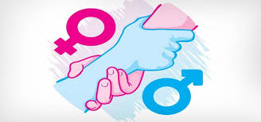
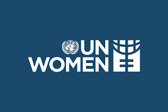
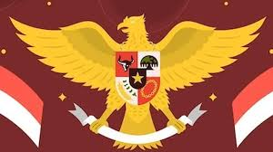

  
Saya memilih tujuan SDGs ke-5, yaitu Kesetaraan Gender, karena isu ini masih menjadi tantangan besar di Indonesia. Meskipun telah ada banyak kemajuan, perempuan di beberapa wilayah masih menghadapi hambatan dalam akses pendidikan, pekerjaan, dan partisipasi di sektor publik. Kesetaraan gender sangat penting untuk membangun masyarakat yang adil, di mana setiap individu, baik laki-laki maupun perempuan, memiliki kesempatan yang sama untuk berkontribusi dalam berbagai bidang kehidupan.
Untuk mendukung kesetaraan gender, Indonesia telah bekerja sama dengan berbagai organisasi internasional, seperti UN Women dan UNICEF, dalam program-program pemberdayaan perempuan dan anak perempuan. Salah satu bentuk nyata adalah kampanye global untuk meningkatkan akses pendidikan bagi anak perempuan di daerah terpencil, serta program pelatihan keterampilan kerja bagi perempuan. Selain itu, Indonesia juga menjadi bagian dari forum ASEAN Committee on Women (ACW), yang membahas strategi regional untuk mengatasi ketidaksetaraan gender.
Kerjasama ini telah memberikan dampak positif, seperti meningkatnya jumlah anak perempuan yang bersekolah, terutama di daerah yang sebelumnya memiliki tingkat partisipasi rendah. Selain itu, program pelatihan kerja telah membantu banyak perempuan untuk mandiri secara finansial, sehingga dapat meningkatkan taraf hidup keluarganya. Kesetaraan gender juga mendorong masyarakat menjadi lebih inklusif, di mana perempuan memiliki peran yang lebih besar dalam pengambilan keputusan, baik di rumah tangga maupun masyarakat.
Kerjasama ini mencerminkan nilai-nilai Sila Kedua (Kemanusiaan yang Adil dan Beradab) dan Sila Kelima (Keadilan Sosial bagi Seluruh Rakyat Indonesia). Dengan mendorong kesetaraan gender, Indonesia menunjukkan komitmen untuk menghormati hak asasi setiap individu tanpa memandang jenis kelamin. Nilai gotong royong juga terlihat dalam kerja sama antara pemerintah, organisasi internasional, dan masyarakat untuk memastikan perempuan dan laki-laki memiliki kesempatan yang sama dalam segala aspek kehidupan.